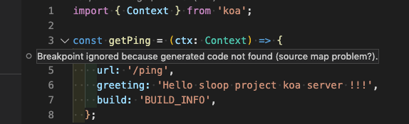
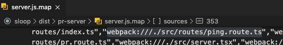
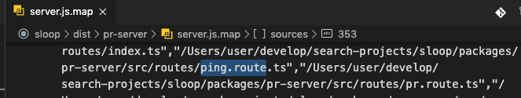

소개
node project을 진행중에 폴더 구조 변경 이후 아래와 같이 “breakpoint ignored” 가 발생하면서, 코드 디버깅을 IDE(vscode, intellij, 등)에서 하지 못하는 문제가 발생하였다. 하여 해당 문제의 발생 원인 및 해결 방법에 대해서 간략하게 설명한다.

원인
해당 문제가 발생하는 이유는 ts이건 js이건 빌드 이후 생성한 debug용 “*.map” 파일에 기록되어 있는, 원본(original) 코드 위치 및 loader위치가, 실제 해당 프로젝트의 원본 코드(original code)의 위치가 맞지 않아서 발생하는 문제이다.
해당 문제가 발생했을때, 상황을 좀더 빠르게 확인하려면, dubug용 빌드시 명확하게 path가 보이는 옵션으로 빌드하여 “*.map” 파일을 열어서 확인해보는게 좋다.
// webpack을 사용하는 경우 devtool 설정을 "source-map" 으로 한다.
{
devtool: "source-map",
}
문제가 발생하는 경우 예제
- 원본 소스 위치: /packages/pr-server/src/routes/ping.route.ts
- 디버그 map파일에 기록된 소스 위치: webpack:///./src/routes/ping.route.ts
- 빌드 결과 위치
- /dist/pr-server/server.js
- /dist/pr-server/server.js.map

위 예제와 같은 경우 IDE(vscode, intellij, 등)에서는 map파일에 기록된 소스 위치로 원본 소스를 찾게 되는데, 실제 위치에 해당 파일이 없기 때문에 debug point가 정상 동작하지 않게 된다.
해결 방법
원인이 명확하기 때문에 원인을 해결하면 문제를 해결 할 수 있다. 원인을 해결 하는 방법은 아래와 같이 2가지가 존재 할 수 있다.
- IDE에서 map파일에 기록된 path을, 실제 original source file 위치로 다시 mapping
- build시점에 debug용 source map을 생성할때, 명확한 source path로 map파일이 생성되도록 설정
사용하고 있는 IDE와, bundler에 따라서 조금씩 방법이 다르겠지만, 핵심은 결국 위 2가지 방법으로 해결 할 수 있다. 여기서는 IDE(vscode) 인 경우와, bundler(webpack)인 경우 해결 방법에 대해서 설명한다.
IDE(VSCode)설정을 이용해서, debug 파일(*.map)의 path을 설정하기
VSCode의 경우 debug launch을 할때, “launch.json” 에 debug run configuration을 설정할 수 있다. 이때 launch.json의 “sourceMapPathOverrides” 설정을 이용해서, debug point 미스 매칭을 해결 할 수 있다.
// vscode의 launch.json 설정 예제
{
"version": "0.2.0",
"configurations": [
{
"type": "node",
"request": "attach",
"name": "Attach by Process ID",
"protocol": "inspector",
"port": 9331,
"restart": true,
// 아래 3개의 설정을 추가해 주면 된다. 그중 핵심은 "sourceMapPathOverrides" 설정이다.
"sourceMaps": true,
"trace": true,
"sourceMapPathOverrides": { "webpack:///./src/*": "${workspaceRoot}/packages/pr-server/src/*" }
}
]
}
위 예제의 경우, 디버그 “*.map” 파일에 미스 매칭된 relative path을 실제 origin source code path로 설정해 주고 있다.
이후 vscode에서 debug launch을 시도해보면 정상적으로 debug point가 기동됨을 확인 할 수 있다.

Bundler(Webpack)설정을 변경하여, debug 파일(*.map)생성시 path을 명확하게 설정하기
webpack의 경우, debug 설정을 “devtool” 을 사용하게 되어 있는데, 이때 output설정에 “devtool”의 부가 설정이 가능하다.
참고: https://webpack.js.org/configuration/output/#outputdevtoolmodulefilenametemplate
가장 간단한 방법은 아래 예제와 같이 webpack의 output설정중 devtoolModuleFilenameTemplate 설정을 absolute path로 주는 형태이다.
예제
// webpack.config.js
{
devtool: "source-map",
output: {
path: path.resolve(rootPath, `dist/${packageJSON.name}`),
filename: '[name].js',
chunkFilename: '[name].js',
// 아래 devtoolModuleFilenameTemplate 설정이 핵심이다.
devtoolModuleFilenameTemplate: '[absolute-resource-path]',
},
...
}
위 예제와 같은 형태로 build시도시 아래와 같이 absoulte path설정이 된 debug “*.map” 파일을 볼 수 있다.

해당 설정에서 IDE의 기본설정으로 아래와 같이 break point가 정상 동작됨을 확인 할 수 있다.

요약
- 원인: debug 정보상 원본 source 에 대한 path 미스 매칭
- 해결: path미스매칭을 맞추어 주면 됨
- IDE의 debug run 설정에서 맞추거나
- Bundler에서 debug 모드 빌드시 map 파일의 path설정을 맞추어 줌
- 추가: 각 IDE와 bundler마다 설정방법이 다를수 있다. 해당 부분은 잘 찾아서 맞추어 주어야 한다. 여기서는 vscode와 webpack 사용시 해결방법에 대하여 설명하였다.